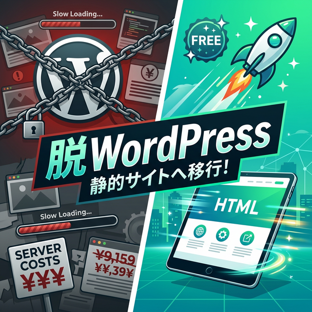
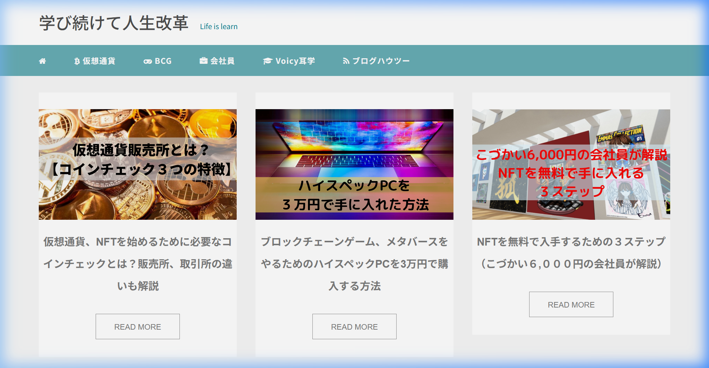
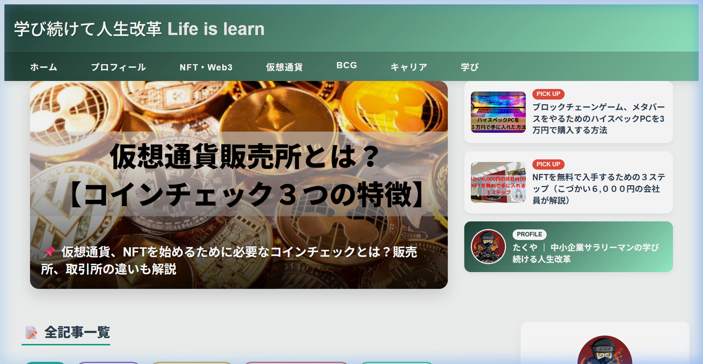
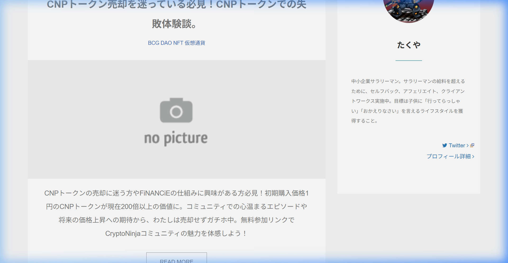
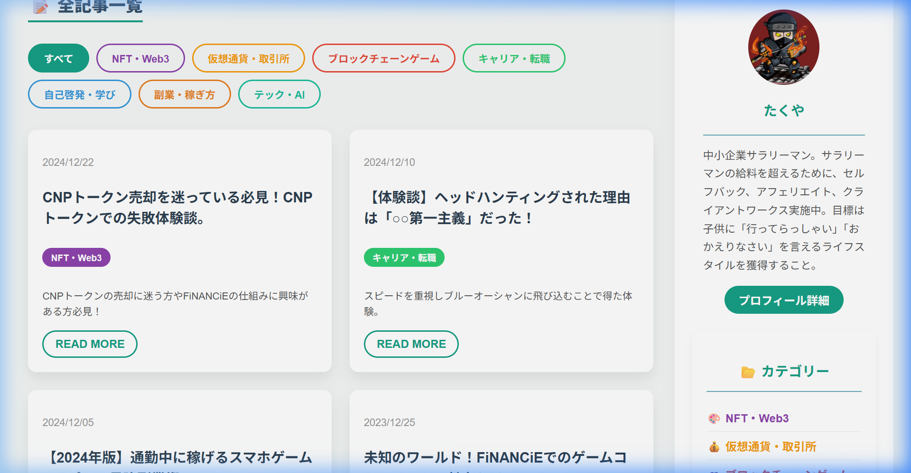
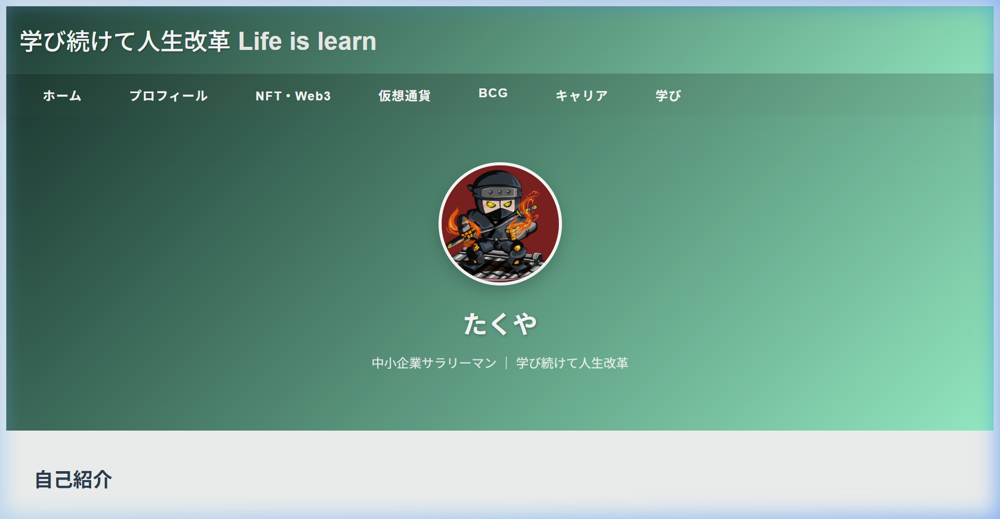

「WordPressのサーバー代、毎月払い続けるのがもったいない…」
「ブログの表示速度が遅いのが気になるけど、どうすればいいか分からない…」
「WordPress、正直使いこなせていないかも…」
そんな悩みを抱えている個人ブロガーの方、多いのではないでしょうか？
実は私も同じ悩みを抱えていました。約4年間WordPressでブログを運営してきましたが、サーバー代を払い続けながら、サイトの表示速度は遅く、セキュリティの不安も常に感じていました。
2025年12月、ついに「脱WordPress」を決意。しかし、当時の私のスキルとAIの技術レベルでは、うまく移行できませんでした。
それから3ヶ月。AIの進化と自分のスキルアップが重なり、ついに63記事すべてを静的HTMLサイトに完全移行することに成功しました。
- WordPressから脱出したリアルな経緯と挫折→成功のストーリー
- 実際に使ったAIツールとプロンプトの実例
- 63記事の完全移行手順
- ビフォーアフターの比較
- 移行後に判明した驚くべきコスト差
📖 この記事の目次
1. なぜ「脱WordPress」を決意したのか（2025年12月）
私がWordPressでブログを始めたのは2021年10月。転職経験やNFT、仮想通貨の情報を発信するための個人ブログとしてスタートしました。
当時はWordPressが「ブログと言えばWordPress」と言われるほどの定番で、迷うことなくWordPressを選択。テーマ（マナブログのm_theme）を導入し、プラグインを入れて運営を開始しました。
しかし、3年以上運営する中で、いくつかのモヤモヤが溜まっていきました。
モヤモヤ①：毎月のサーバー代が地味に痛い
個人ブログで月間PVがそこまで多くないのに、レンタルサーバーに毎月1,000円前後を払い続けるのは正直キツイ。「このお金があれば他の自己投資に使えるのに…」と何度も思いました。
モヤモヤ②：表示速度が遅い
WordPressは動的にページを生成するため、アクセスのたびにデータベースからコンテンツを取得し、PHPで処理してHTMLを返します。ページの表示に3〜5秒かかることもありました。
Googleの調査によると、ページ読み込みに3秒以上かかると、53%のユーザーがサイトを離脱すると言われています。SEO的にも表示速度は重要な指標です。
モヤモヤ③：セキュリティの不安
WordPressは世界で最も利用されているCMSであるがゆえに、ハッカーの標的になりやすいです。プラグインの脆弱性、ブルートフォース攻撃…。常に最新に保つ管理が面倒でした。
モヤモヤ④：使いこなせていない機能
正直に言うと、WordPressの機能の10%も使っていませんでした。記事を書いて公開するだけなのに、データベース、PHP、プラグインの管理…。個人ブログにここまでの機能は過剰です。
2025年12月、これらのモヤモヤが限界に達し、「脱WordPress」を決意しました。
2. 最初の挫折 — AIのレベルが足りなかった
2025年12月、意気込んでWordPressからの移行に着手しましたが、結果は挫折でした。
当時の問題点
当時使っていたAIコーディングアシスタントに移行を依頼しましたが、以下の理由でうまくいきませんでした。
- AIの理解度が不十分：WordPressの複雑なテーマ構造を正確にパースできなかった
- コンテキスト長の制限：63記事分の情報を一度に処理しきれなかった
- 自動化の精度が低い：抽出スクリプトが正しいHTML構造を認識できず、記事本文の大部分が欠落
- 私自身のプロンプト力不足：AIに何をどう指示すれば良いか分からなかった
「WordPressから静的HTMLサイトに移行して」という漠然とした指示では、AIは正しく動けませんでした。テーマの構造、CSSクラス名、記事の数、カテゴリー構成など、具体的な情報を段階的に伝える必要があることを学びました。
結局、中途半端な状態で移行を断念。「もっとAIが進化するのを待とう」と判断し、一旦WordPressの運営を継続することにしました。
3. 3ヶ月後の再挑戦 — AIの進化が追いついた
2026年3月、AIコーディングアシスタントが大幅にアップデートされました。
3ヶ月で何が変わったのか
- AIのコンテキスト理解力が向上：複雑なWordPressテーマ構造を正確にパースできるように
- ブラウザ操作の自動化：AIが直接Webページを開いて構造を確認し、適切なセレクタを見つけられるように
- バッチ処理の精度向上：63記事を一括で処理するスクリプトを正確に生成
- 私のプロンプト力が向上：タスクを適切に分割し、段階的にAIに指示する方法を習得
AIの進化と自分のスキルアップが合わさった結果、わずか半日で63記事の完全移行を達成できました。
4. 使用したAIツールと実際のプロンプト
今回の移行で使用したAIツールと、実際に使ったプロンプトの実例を公開します。
使用したAIツール
🤖 Antigravity（Google DeepMind）
今回の移行で主に使用したのは、Google DeepMindが開発したAIコーディングアシスタント「Antigravity」です。VS Code上で動作し、ファイル操作、コマンド実行、ブラウザ操作まで自動で行えるのが特徴です。
🔧 AIの役割をどう定めたか
AIに仕事を頼む前に、まず「AIにどんな役割を担ってもらうか」を自分の中で明確にしました。これが成功の鍵だったと思います。
2025年12月の挫折時は、AIを「魔法の箱」のように捉え、「全部やって」と丸投げしていました。当然、うまくいきません。
今回の成功時は、AIの役割を以下のように定義しました。
- Web制作のパートナー：指示通りにコードを書き、ファイルを生成する実行者
- 技術的な問題の解決者：WordPressのHTML構造調査や、スクリプト作成はAIに任せる
- 判断はあくまで自分が行う：何を移行するか、どんなデザインにするか、カテゴリーをどうするかは自分が決める
つまり、「私が監督、AIが作業者」という関係を意識しました。AIに全てを任せるのではなく、ゴールと方向性は自分が決め、実行をAIに任せるというスタンスです。
このスタンスを明確にしたことで、プロンプトの出し方が大きく変わりました。漠然と「やって」ではなく、「何を」「どうしたいか」を具体的に伝えられるようになったのです。
⬇️ 実際のプロンプト① ：移行の開始
個人ブログだけやってほしい。
既存のプロジェクトには影響を与えないように、
新しいフォルダで作って。
💡 ポイント：最初のプロンプトでは、作業対象を明確に限定しました。「個人ブログだけ」と範囲を絞り、「既存プロジェクトに影響しないように」とNGラインを伝えたことで、AIが安全に作業を開始できました。
⬇️ 実際のプロンプト② ：全記事の移行指示
全部wordpressから移行して。
💡 ポイント：最初は13記事しか移行されていなかったので、「全部」を強調。AIはWordPressのサイトマップを自動でクロールし、残り50記事を発見して移行を実行しました。
⬇️ 実際のプロンプト③ ：コンテンツ品質の指示
💡 ポイント：AIが最初に移行した記事は本文の20〜30%しか移行できていませんでした。この指示により、AIはWordPressテーマのHTML構造を再調査し、正しいCSSセレクタを発見。全記事を再抽出して完全な本文を復元しました。
⬇️ 実際のプロンプト④ ：レイアウト改善の指示
カテゴリー分けを適切に行ってほしい。
今までのカテゴリー分けにとらわれずにやって。
プロフィールも移行して。
💡 ポイント：UIの改善指示は、現状の問題点（右側の余白）と要望（カテゴリー再編成、プロフィール移行）を具体的に。「今までのカテゴリー分けにとらわれずに」という一言で、AIは記事内容を分析し、7つの新カテゴリーに再分類しました。
プロンプトのコツまとめ
- AIの役割を先に決める：「実行者」なのか「相談相手」なのかを自分の中で明確に
- 作業対象を限定する：「個人ブログだけ」「既存に影響しないように」など
- 現状の問題を具体的に伝える：「右側に余白がある」「内容が薄い」など
- 結果を確認してフィードバックする：出力をチェックし、問題があれば具体的に修正指示
📋 WordPress移行に使えるプロンプト集
私の実体験をもとに、WordPress移行で実際に役立つプロンプトのテンプレートをまとめました。これからAIで移行を考えている方は、ぜひ参考にしてください。
STEP1：移行の準備
サイトマップから取得してリスト化して。
記事の合計数も教えて。
STEP2：記事の抽出と変換
元のWordPressのデザインを維持しつつ、
ヘッダーとフッターは共通テンプレートにして。
既存のプロジェクトには影響を与えないように
新しいフォルダに保存して。
STEP3：品質チェック（重要！）
文字数が大幅に減っている記事があれば教えて。
内容が欠落している場合は全文を再抽出して。
STEP4：デザイン・レイアウトの改善
おすすめ記事を目立つ位置に配置して。
記事のカテゴリーを内容に合わせて再分類して。
プロフィールページも新規作成して。
STEP3の品質チェックは絶対に省略しないでください。私の場合、最初の移行では記事本文の70〜80%が欠落していました。AIの「完了しました」を鵜呑みにせず、必ず自分の目で確認する。これが移行成功の最大のコツです。
5. 実際の移行手順（63記事の完全移行）
AIとの協力で行った移行作業の全手順を公開します。
1 WordPress全記事URLの自動取得
AIがWordPressのサイトマップ（sitemap.xml）とサイト全体を自動クロールし、63記事のURLリストを作成。手動で一つ一つ確認する必要はありませんでした。
2 テーマ構造の自動分析
AIがブラウザでWordPressサイトを直接開き、DevTools的にHTML構造を分析。記事本文を囲むCSSクラス（.col-xs-12.wrap.single）を特定しました。
3 抽出スクリプトの自動生成と実行
AIがNode.jsスクリプトを生成し、全63記事の本文を自動抽出。HTMLテンプレートに埋め込んで静的ファイルを生成しました。
4 コンテンツ品質の検証
AIがWordPress版と静的HTML版の文字数を自動比較し、コンテンツの欠落がないことを確認。不足があった13記事は自動で再抽出されました。
5 インデックスページの構築
トップページをモダンなデザインに改良。ヒーローセクション、カテゴリーフィルター、プロフィールカードを配置しました。
6 プロフィールページの新規作成
WordPressで削除されていたプロフィールページを、グラデーションヒーロー付きで新規作成しました。
7 ローカルテストと検証
ローカルサーバーで全ページの動作確認を自動実行。ブラウザ操作でのスクリーンショット撮影もAIが自動で行いました。
6. ビフォーアフター比較
実際に「脱WordPress」前と後で、サイトがどう変わったのかを比較します。
トップページ比較


BEFORE：トップ3記事が左側に配置され、右側に大きな余白。レイアウトがシンプルすぎて、どの記事が重要か分かりにくい。
AFTER：メイン記事を大きく表示し、右側にPICK UP記事とプロフィールカードを配置。ユーザーが最初に見る画面でサイトの全体像が把握できるように。
記事一覧 比較


BEFORE：リスト形式で並ぶだけ。カテゴリーの区別が分かりにくく、画像が表示されない記事も目立つ。
AFTER：色分けされたカテゴリータグで一目瞭然。フィルターボタンでワンクリック絞り込みも可能。
新規追加：プロフィールページ

WordPress版では削除されていたプロフィールページを新規作成。グラデーションヒーロー付きの本格的なページで「誰がこのブログを書いているのか」を明確に。
7. 移行後に調べて驚いた！WordPressの本当のコスト
移行が完了した後、改めてWordPressの維持費を正確に計算してみました。結果を見て「もっと早く移行すればよかった」と後悔しました。
WordPress.comの料金プラン（2025年版）
| プラン | 月額（年払い） | 年間コスト | 主な機能 |
|---|---|---|---|
| 無料 | 0円 | 0円 | 広告表示あり、サブドメインのみ |
| パーソナル | 1,280円 | 約15,360円 | 独自ドメイン、広告非表示、6GB |
| プレミアム | 2,500円 | 約30,000円 | プレミアムテーマ、収益化、13GB |
| ビジネス | 5,600円 | 約67,200円 | プラグイン利用可、SEOツール、50GB |
| コマース | 10,000円 | 約120,000円 | EC機能、決済機能付き |
WordPress.org（自前サーバー）の場合
| 項目 | 月額目安 | 年間コスト |
|---|---|---|
| レンタルサーバー（エックスサーバー等） | 990円〜 | 約11,880円〜 |
| 独自ドメイン | - | 約1,000円〜3,000円 |
| 有料テーマ（初回） | - | 10,000円〜20,000円 |
| SSL証明書 | 0円〜 | 0円（無料SSL利用時） |
| 合計（初年度） | - | 約23,000円〜35,000円 |
| 合計（2年目以降） | - | 約13,000円〜15,000円 |
静的HTMLサイト（GitHub Pages）の場合
| 項目 | 月額 | 年間コスト |
|---|---|---|
| ホスティング | 0円 | 0円 |
| SSL証明書 | 0円 | 0円 |
| 独自ドメイン（任意） | - | 約1,000円〜3,000円 |
| 合計 | - | 0円〜3,000円 |
WordPressで個人ブログを3年間運営すると、最低でも約50,000円〜80,000円のコストが発生。GitHub Pages（無料）に移行すれば、この金額がまるまる浮きます。浮いたお金で自己投資に回せると考えると、もっと早く移行すべきだったと心底思いました。
総合比較表
| 比較項目 | WordPress | 静的HTMLサイト |
|---|---|---|
| 年間コスト | 13,000円〜67,200円 | 0円〜3,000円 |
| 表示速度 | 3〜5秒 | 0.3〜0.5秒 |
| セキュリティ | 常に更新が必要 | 攻撃リスクほぼゼロ |
| メンテナンス | プラグイン・テーマ更新必要 | ほぼ不要 |
| バックアップ | DB+ファイル両方必要 | ファイルコピーだけ |
| カスタマイズ | テーマ・プラグイン依存 | HTML/CSSで自由自在 |
8. 移行で困ったことと解決策
移行作業を進める中で、私自身がいくつかの壁にぶつかりました。技術的な問題はAIが解決してくれましたが、「人間側の判断」が必要な場面が何度もありました。
困ったこと①：どう指示すれば移行できるのか分からなかった
これが最も大きな壁でした。「WordPressから移行したい」という気持ちはあっても、AIに何をどう伝えれば移行が実現するのか、最初は全く分かりませんでした。
2025年12月の挫折時は「WordPressを移行して」とだけ伝えていました。しかし、それではAIは何をすべきか理解できません。
解決策：試行錯誤の末、以下のようにタスクを小さく分解して伝えることが重要だと気づきました。
- まず「全記事のURLを取得して」
- 次に「記事の本文を抽出して」
- 問題があれば「内容が薄いので全文移行して」と具体的にフィードバック
- 最後に「レイアウトを改善して」とデザイン面を指示
一度に全部をお願いするのではなく、段階的に指示を出し、結果を確認しながら次の指示を出すのがコツです。
困ったこと②：WordPressからどこに移行すればいいか分からなかった
「脱WordPress」を決意しても、移行先の選択肢が多すぎて迷いました。
- Wix？ → 結局サーバー代がかかる
- はてなブログ？ → カスタマイズ性が低い
- Note？ → SEO的に自由度がない
- Netlify？ → 設定が難しそう
- GitHub Pages？ → 無料、使いやすそう、エンジニアも使っている
解決策：最終的にGitHub Pagesを選びました。理由は以下の3つです。
- 完全無料：ホスティング費用が一切かからない
- 使いやすい：GitHubにファイルをアップロードするだけでサイトが公開される
- 信頼性：Microsoftが運営しており、突然サービスがなくなるリスクが低い
プログラマーじゃなくても使える？と不安でしたが、実際にやってみるとファイルをドラッグ＆ドロップするだけでサイトが公開できました。思っていたより遥かに簡単でした。
困ったこと③：AIの出力結果が期待と違う時の対処
AIは万能ではありません。最初に移行した記事は本文の20〜30%しか含まれていませんでした。「ちゃんと移行できたのかな？」と確認したところ、内容がスカスカだったのです。
解決策：「記事の内容が薄くなっているので、全文余すことなく移行してください」と具体的にフィードバックを伝えました。すると、AIはWordPressの構造を再分析し、正しいセレクタを見つけて全記事を完全に再抽出してくれました。
AIの出力は必ず自分の目で確認しましょう。「うまくいった」というAIの報告を鵜呑みにせず、実際にブラウザで開いて元サイトと比較することが大切です。AIを「完璧な道具」ではなく「優秀だけどチェックが必要なパートナー」として付き合うのがベストです。
9. 脱WordPressに向いている人・向いていない人
✅ 向いている人
- 個人ブロガー：記事を書いて公開するだけならWordPressは過剰
- コストを抑えたい人：年間1万円以上の節約が可能
- 表示速度を改善したい人：静的HTMLは圧倒的に高速
- セキュリティを重視する人：攻撃リスクがほぼゼロに
- AIツールを活用できる人：プロンプトでHTMLを生成できれば移行は簡単
❌ 向いていない人
- ECサイト運営者：商品管理・決済機能が必要
- 複数人で運営：CMSの管理画面が必要な場合
- プログラミング知識ゼロ＋AIも使えない：ハードルが高い
- コメント機能が必須：静的サイトにはデフォルトのコメント欄がない
10. まとめ：AIの力で「不可能」が「簡単」になった
2025年12月に一度挫折した「脱WordPress」。しかし、わずか3ヶ月後にAIの進化と自分のスキルアップにより、半日で63記事の完全移行を達成できました。
振り返って最も実感するのは、「AIとの協力で、エンジニアでなくてもWebサイトの構築・移行ができる時代が来た」ということです。
🎯 脱WordPressの結論
個人ブロガーにとって、WordPressは「便利だけどコストが高すぎる」ツールです。
AIの力を借りれば、年間3万円以上を節約し、表示速度10倍、
セキュリティリスクほぼゼロの静的HTMLサイトへの移行はもはや難しくありません。
💰 浮いたお金で自己投資しよう！
🤖
AIの力を借りて、一歩踏み出そう！
「脱WordPress」は、一度やれば終わりです。移行作業は半日程度。その後はサーバー代の心配も、セキュリティの不安も、プラグイン更新の手間もなくなります。
2025年12月にはできなかったことが、2026年3月にはできた。テクノロジーは確実に、私たち個人の力を増幅してくれます。
個人ブログのコストや管理に悩んでいる方は、ぜひAIの力を借りて挑戦してみてください。きっと「もっと早くやればよかった」と思うはずです。
この記事が参考になった方は、ぜひTwitter（@voicy_love）でシェアしてください！
脱WordPressの体験談や質問もお待ちしています。